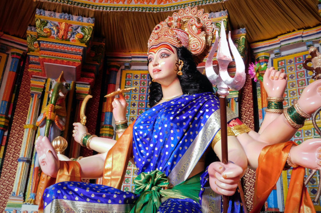
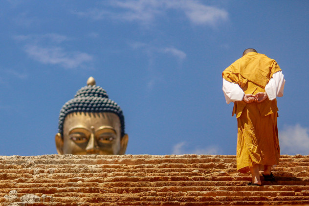

O que é o Budismo?
Budismo é uma religião e filosofia orientais, fundada na Índia, em VI a.C., por Siddhartha Gautama, o Buda (“o desperto” ou “o iluminado” em sânscrito).A filosofia budista é guiada pelos ensinamentos de Buda, que conduzem o indivíduo a uma felicidade plena, através das práticas meditativas, do controle da mente e da autoanálise de suas ações diárias. O budismo é reconhecido como uma filosofia de vida, porque os ensinamentos de Buda são focados na razão e na análise individual de cada ser humano. Os budistas acreditam que a consciência física e espiritual leva à iluminação e elevação, o chamado nirvana.Nirvana é o estado mais alto da meditação. Segundo Buda, é quando o indivíduo encontra a paz e a tranquilidade, cessando as oscilações dos pensamentos e das emoções, se livrando do sofrimento do mundo físico. Atualmente está entre as 10 maiores religiões do mundo, com milhões de praticantes no Oriente e no Ocidente. Uma de suas maiores características é o ateísmo, ou seja, o budismo não crê em um deus ou qualquer outro ser supremo.
História do Budismo
A história do Budismo inicia através de Siddhartha Gautama. Um príncipe do clã Shakya, que nasceu e cresceu no luxo de seu palácio, no século VI a.C., no sul do Nepal, na Índia.O raja Suddhodana, pai de Siddhartha, protegeu o filho do mundo exterior, para que ele não convivesse com as aflições humanas, como a fome, a morte, as doenças e as injustiças sociais. Porém, aos seus 29 anos, o então príncipe saiu de seu castelo, fugido do seu pai, e conheceu o sofrimento humano de perto. Naquela mesma noite, decidiu renunciar sua vida luxuosa e o trono, com o objetivo de descobrir uma maneira de aliviar o sofrimento humano.Nos primeiros 6 anos de sua peregrinação, ele acompanhou alguns mestres espirituais da época, os scetas. Através das práticas dessa filosofia, Siddhartha experienciou a renúncia do prazer e a mortificação, um tipo de auto penitência física severa, como longos jejuns.Sem resultados para o seu objetivo de acabar com o sofrimento da humanidade, Siddhartha abandonou a vida asceta.
Esse é o estado mais alto da meditação, quando o indivíduo encontra a paz, ao desconstruir as causas do seu próprio sofrimento, se libertando das aflições físicas e emocionais do mundo físico. Assim, Siddhartha tornou-se Buda (ou Shakyamuni Buda, devido ao seu clã Shakya), o iluminado, deixando claro que qualquer outro ser humano poderia se tornar buda ao atingir este mesmo estágio. Foi então que, mesmo sendo acusado por seus seguidores e mestres da época, ele escolheu “o caminho do meio”. Este caminho é definido por ele como aquele que leva o indivíduo à libertação, sem qualquer tipo de extremismo religioso ou físico, o que conhecemos hoje como o Budismo. Depois de encontrar o caminho, ele passou a proferir sua palavra para os outros monges, que se tornaram seus discípulos, propagando seus ensinamentos.
Diferença entre Budismo e Hinduísmo e o Budismo no Brasil
O Budismo e o Hinduísmo são duas tradições religiosas e filosóficas que surgiram na região da Índia. As duas apresentam muitas semelhanças nas crenças, como os conceitos de dharma, karma e samsara. No entanto, as principais diferenças se dão no terreno das práticas. No hinduísmo existe a busca da consciência em Deus e consequente adoração das divindades como caminho da salvação, o que é muito diferente da busca pela iluminação espiritual budista.
Entre as práticas do hinduísmo está a divisão da sociedade hindu pelo sistema de castas, o que diverge do conceito de igualdade entre os seres defendido pelos budistas. O Hinduísmo seria anterior ao Budismo, tendo já mais de quatro mil anos.
O Budismo foi introduzido no Brasil no começo do século XX. No dia 18 de Junho de 1908, chegava ao Brasil Tomojiro Ibaragui, mais conhecido como Ibaragui Nissui, o primeiro monge budista do Brasil.A filosofia é difundida desde então em todo o país, muito em função pela grande imigração japonesa, que tem como religião principal o budismo. Os principais templos budistas do Brasil estão localizados em Três Coroas (RS), e o Templo Zu Lai em Cotia (SP)
Espero que tenham gostado do breve resumo sobre a história do Budismo!